STM32F1 系列标准库压缩包文件：STM32F10x_StdPeriph_Lib_V3.5.0
# 新建工程步骤总结
- 建立工程文件夹，Keil 中新建工程，选择型号
- 工程文件夹里建立 Start、Library、User 等文件夹，复制固件库里面的文件到工程文件夹
- 工程里对应建立 Start、Library、User 等同名称的分组，然后将文件夹内的文件添加到工程分组里
- 工程选项，C/C++，Include Paths 内声明所有包含头文件的文件夹
- 工程选项，C/C++，Define 内定义 USE_STDPERIPH_DRIVER
- 工程选项，Debug，下拉列表选择对应调试器，Settings，Flash Download 里勾选 Reset and Run
# 启动文件
位置： STM32F10x_StdPeriph_Lib_V3.5.0\Libraries\CMSIS\CM3\DeviceSupport\ST\STM32F10x\startup\arm
将 8 个启动文件全部放到自己工程的 Start 文件夹下（新建）
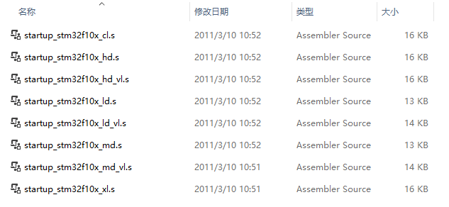
# 外设描述文件和时钟配置文件
位置： STM32F10x_StdPeriph_Lib_V3.5.0\Libraries\CMSIS\CM3\DeviceSupport\ST\STM32F10x
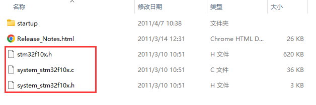
同样也是将这三个文件复制到自己工程的 Start 文件夹下
# 内核寄存器描述文件
位置： STM32F10x_StdPeriph_Lib_V3.5.0\Libraries\CMSIS\CM3\CoreSupport
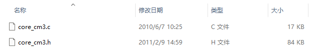
同样也是将这两个文件复制到自己工程的 Start 文件夹下
# 配置 Keil
# 添加 Start
修改组名，将特定启动文件、外设描述文件和时钟配置文件、内核寄存器描述文件添加进组里
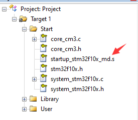
图标上带有小钥匙表明是个只读文件
# 配置头文件路径
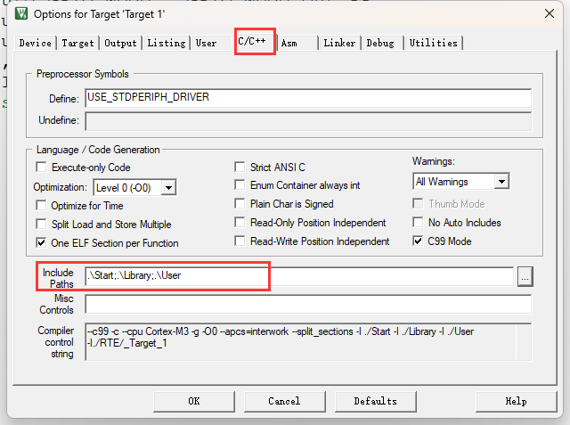
# 配置编码格式
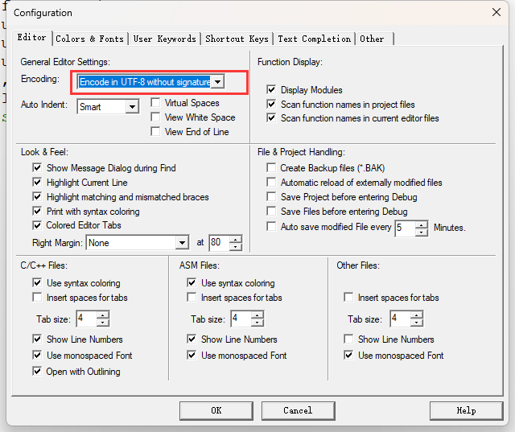
# 自动代码补全
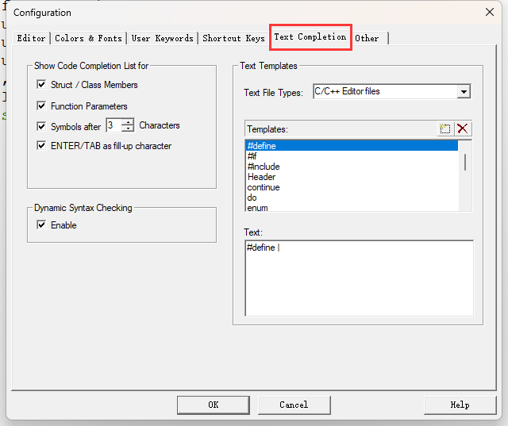
# 配置标准库
位置： STM32F10x_StdPeriph_Lib_V3.5.0\Libraries\STM32F10x_StdPeriph_Driver\src
 共 23 个文件，其中 misc.c 是内核的库函数，其他的就是内核外的外设库函数
共 23 个文件，其中 misc.c 是内核的库函数，其他的就是内核外的外设库函数
将全部文件复制到自己工程的 Library 文件夹下（新建）
同理，将 STM32F10x_StdPeriph_Lib_V3.5.0\Libraries\STM32F10x_StdPeriph_Driver\inc 位置下的头文件也复制到自己工程的 Library 文件夹下
同理，将 Library 文件夹下加进来的 46 个文件添加到 Keil 工程新建 Library 组里
除此之外，还需要将 STM32F10x_StdPeriph_Lib_V3.5.0\Project\STM32F10x_StdPeriph_Template 位置下的 stm32f10x_conf.h 、 stm32f10x_it.c 、 stm32f10x_it.h 三个文件复制到自己工程的 User 文件夹下（新建）
同理，将自己工程的 User 文件夹添加到 Keil 工程新建 User 组里
# 设置宏编译
在 User 组下创建 main.c 文件，第一行添加 #include "stm32f10x.h" ，然后编译，编译后就可以跳转到 stm32f10x.h 文件里了，在文件的底部可以看到宏判断
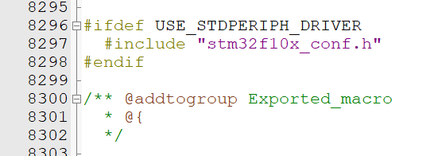
所以需要在工程配置里添加这个宏，下面的 User 和 Library 目录也不要忘记添加到 Include Paths ，即可完成使用标准库的配置
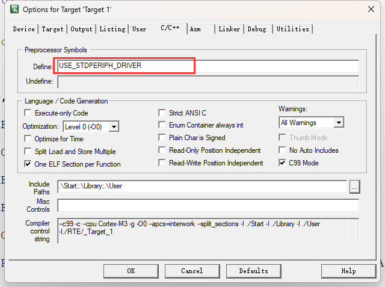
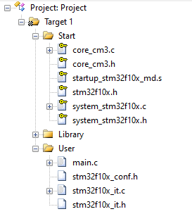
# 测试代码
#include "stm32f10x.h" // Device header | |
int main(void) | |
{ | |
RCC_APB2PeriphClockCmd(RCC_APB2Periph_GPIOC, ENABLE); | |
GPIO_InitTypeDef GPIO_InitStructure; | |
GPIO_InitStructure.GPIO_Mode = GPIO_Mode_Out_PP; | |
GPIO_InitStructure.GPIO_Pin = GPIO_Pin_13; | |
GPIO_InitStructure.GPIO_Speed = GPIO_Speed_50MHz; | |
GPIO_Init(GPIOC, &GPIO_InitStructure); | |
GPIO_SetBits(GPIOC, GPIO_Pin_13); | |
//GPIO_ResetBits(GPIOC, GPIO_Pin_13); | |
while (1) | |
{ | |
} | |
} |
# 启动文件选择讲解
从表中可以看出我们的 STM32F103C8T6 因为是 64 的 Flash，所以选择 MD 的启动文件
| 缩写 | 释义 | Flash 容量 | 型号 |
|---|---|---|---|
| LD_VL | 小容量产品超值系列 | 16~32K | STM32F100 |
| MD_VL | 中容量产品超值系列 | 64~128K | STM32F100 |
| HD_VL | 大容量产品超值系列 | 256~512K | STM32F100 |
| LD | 小容量产品 | 16~32K | STM32F101/102/103 |
| MD | 中容量产品 | 64~128K | STM32F101/102/103 |
| HD | 大容量产品 | 256~512K | STM32F101/102/103 |
| XL | 加大容量产品 | 大于 512K | STM32F101/102/103 |
| CL | 互联型产品 | - | STM32F105/107 |
# 工程架构讲解
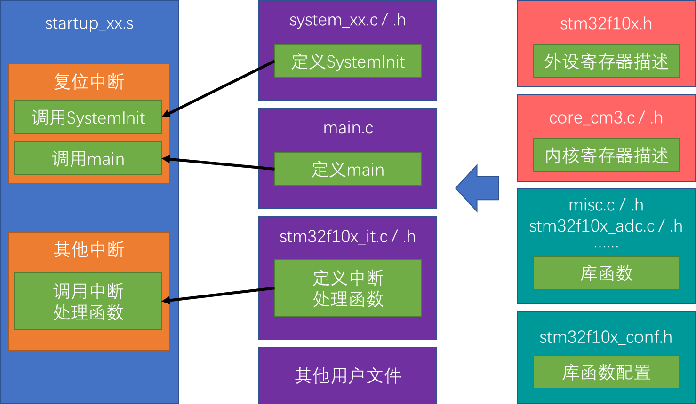